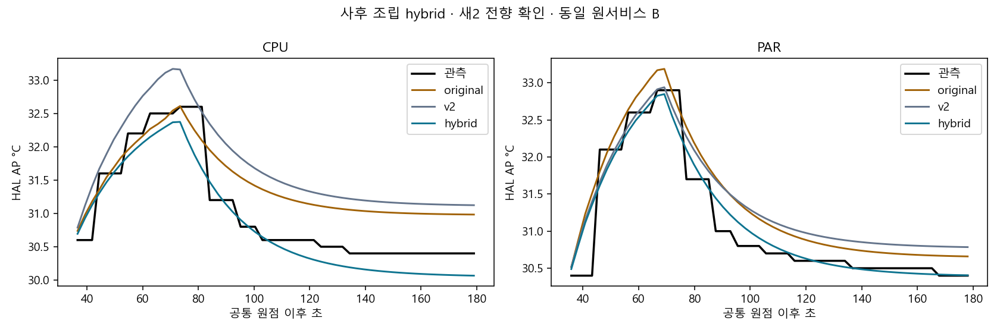
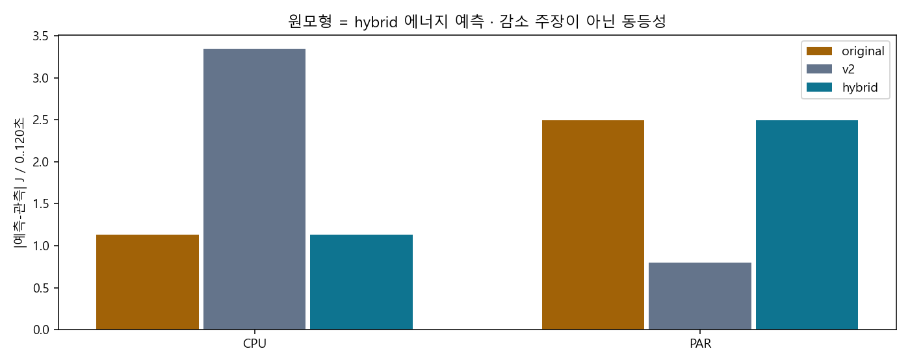
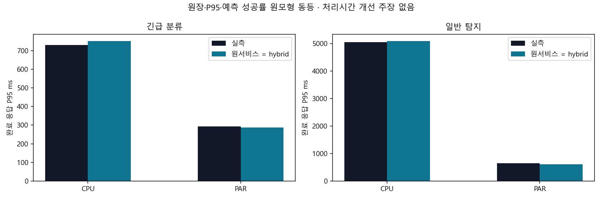

첫 v3의 AP/J 동시 감소 FAIL은 유지합니다. 새4 이후 에너지 보정을 폐기한 사후 조립이며 thermal 계수/α/λ는 사전동결값 그대로입니다. 새2의 기준은 AP 평균 감소＋원 에너지/서비스 동등성입니다. 에너지·P95 오차 감소를 주장하지 않습니다.
전체 수치·한계·부모FAIL · 새 hybrid 모형 · 동결 증거 · A/B 전체 오차 · 에너지·원장·P95 동등 검사 · 전체 도착 분모·서비스 · 첫 v3 확인4 원결과 · 사전 후속 기준
| index | policy | status | planned_requests | observed_completed | observed_timely |
|---|---|---|---|---|---|
| 0 | CPU_URGENT_ONLINE_V1 | validated | 96 | 96 | 96 |
| 1 | B2_PARALLEL_ONLINE_V1 | validated | 96 | 96 | 96 |
| mode | model | evaluated_sessions | mean_AP_MAE_c | mean_J120_abs_j | worst_AP_MAE_c | worst_AP_max_error_c |
|---|---|---|---|---|---|---|
| A_actual_schedule | original | 2 | 0.397 | 1.85019 | 0.47897 | 1.10292 |
| A_actual_schedule | v2 | 2 | 0.51143 | 1.93784 | 0.67601 | 1.13161 |
| A_actual_schedule | hybrid | 2 | 0.20427 | 1.85019 | 0.25552 | 0.94395 |
| B_fixed_original_service | original | 2 | 0.39745 | 1.8122 | 0.47918 | 1.10946 |
| B_fixed_original_service | v2 | 2 | 0.51645 | 2.07014 | 0.68185 | 1.14144 |
| B_fixed_original_service | hybrid | 2 | 0.20248 | 1.8122 | 0.25223 | 0.95596 |
정책별 AP 악화: 검증된 전체 자료의 정책별 수치는 summary/CSV 참조. 한쪽의 악화를 평균으로 숨기지 않습니다.
| policy | J120_delta_j | J120_prediction_identity | ledger_identity | P95_identity | service_metrics_identity |
|---|---|---|---|---|---|
| CPU_URGENT_ONLINE_V1 | 0.0 | True | True | True | True |
| B2_PARALLEL_ONLINE_V1 | 0.0 | True | True | True | True |
{
"native_APK_sha256": "356c668fe111cd1114fc8251b743d0e012b3b159a7f85154a05caf0a2552fce6",
"admitted_minimum_percent": 6,
"minimum_observed_percent": 21,
"any_below20": false,
"power_save_mode_observed": false
}


기본/RL/strict/experiment_ready=false를 유지합니다. 각 정책1회는 최소 전향 확인이며 유의성·일반 우월성·실제 정책 효과는 미판정입니다.